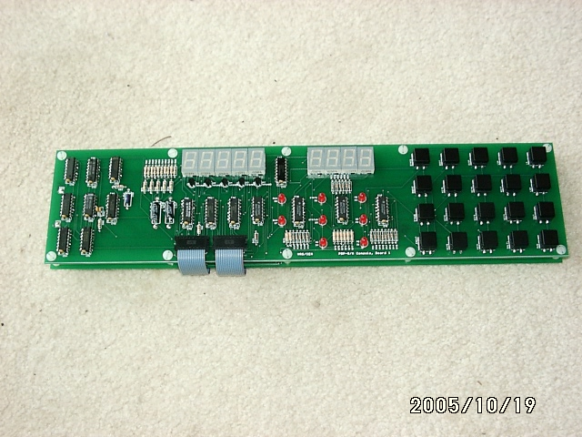

 |
This is what the front board looks like. There should be a metal sheet
with cutouts for the LEDs and square buttons, but I haven't got one yet.
|
 |
The other board attaches with two 40-conductor ribbon cables to the M8316
option board of the PDP-8/A. This board has most of the logic on it.
Visible on both boards are the DIP headers
and little ribbon cables that couple the boards together. Both boards
follow DEC's placement of the components quite closely, though these
boards are a little "taller" than DEC's. The are intended to be
electrically interchangeable, but not mechanically interchangeable.
|
 |
This photo shows how the two boards are mounted with their solder sides
facing each other, and coupled by the small ribbon cables. The spacers
used in this picture are actually about twice as long as the ones that
should be used, once everything is debugged. (They are the spacers that
I have on hand.)
|